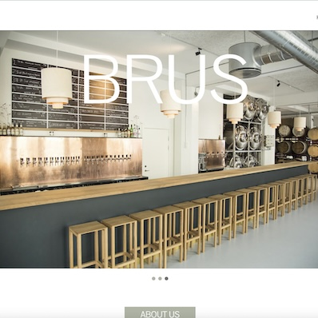
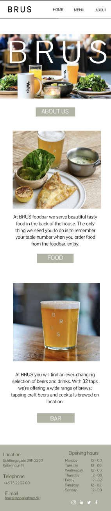
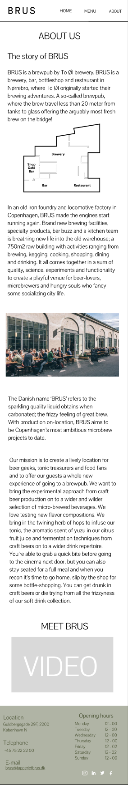
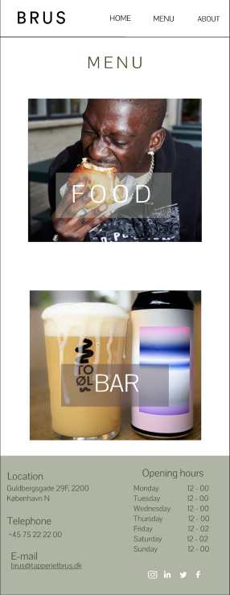
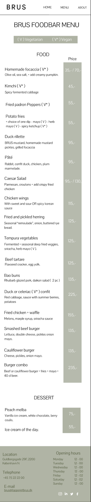
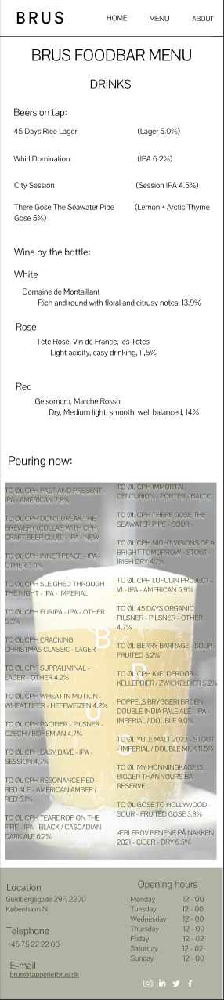

T E M A 5
GRUNDLÆGGENDE INDHOLD
I tema 5 handlede det om at skulle redesigne et allerede eksisterende website. Vi tog udgangspunkt i tapperiet brus website. Min opgave på redesignet var at kode about siden samt food siden under menu. Til dette projekt lærte vi at bruge en BERT test, til at kunne se hvor man selv ligger mellem polerne, sammenlignet med brugerne. Derudover skulle man også individuelt udarbejde et videosite med et interview samt galleri på siden.
Mere informationLINK TIL HJEMMESIDE
MERE INFORMATION
KLIK HER FOR VIDEOSITE

PROTOTYPE - MOBIL SITE




